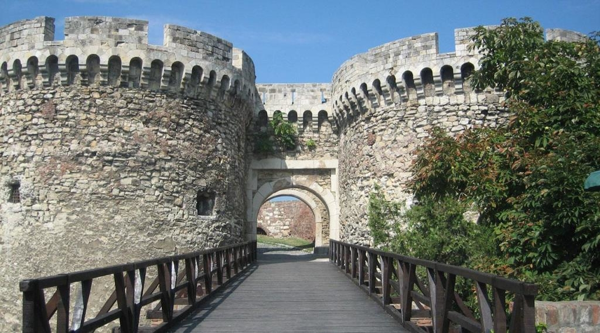
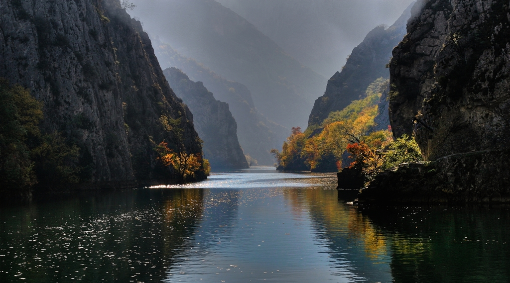
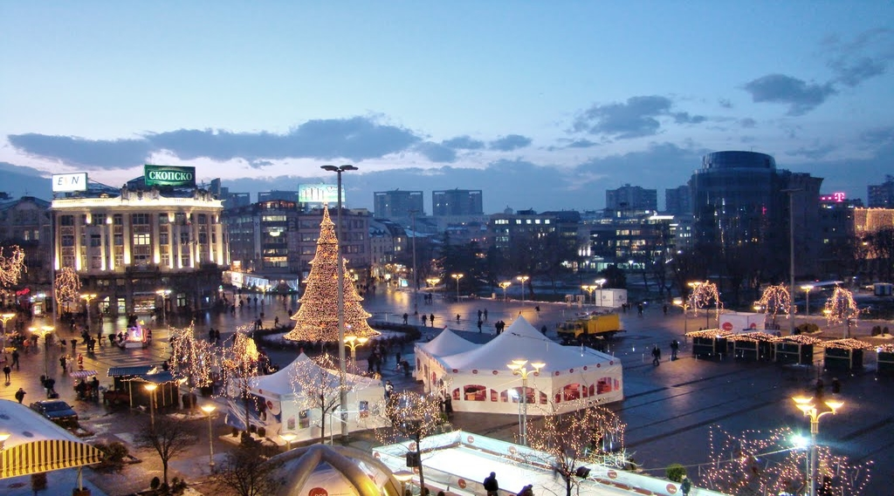
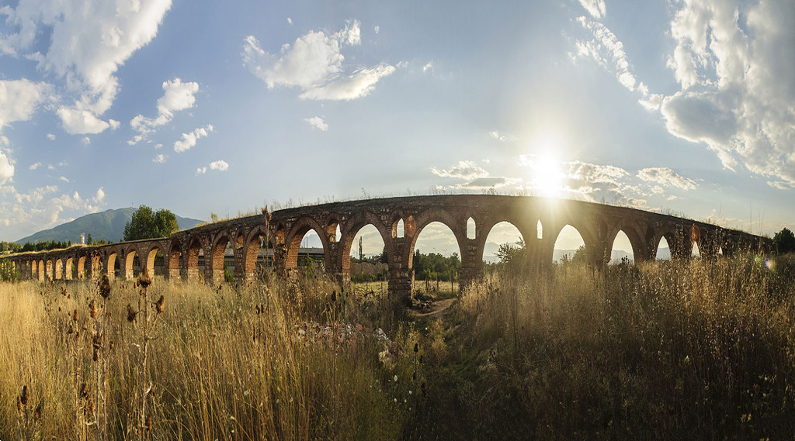
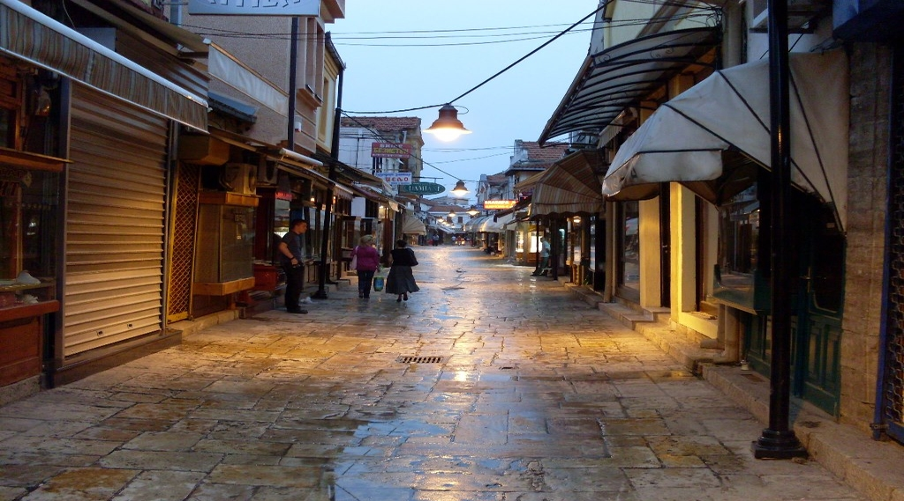
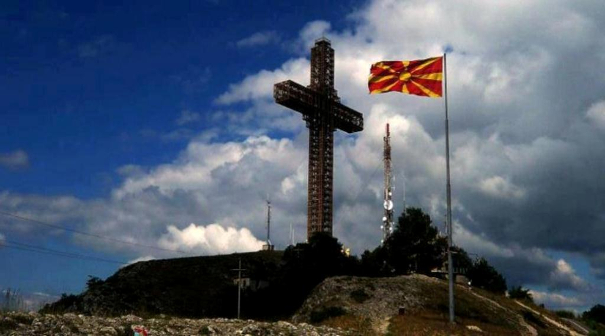

Skopje is the capital of the Republic of Macedonia, in the center of the Balkan Peninsula. Over
time it has experienced Roman, Byzantine and Ottoman rule. The 15th-century Stone Bridge
connects the Ottoman Old Bazaar (Čaršija) on the Vardar River‘s north bank with contemporary
Macedonia Square to the south. The Skopje (Kale) Fortress overlooking the river has defended the
city for centuries.
A Taste of Skopje
Skopje is the capital of the Republic of Macedonia, in the center of the Balkan Peninsula. Over
time it has experienced Roman, Byzantine and Ottoman rule. The 15th-century Stone Bridge
connects the Ottoman Old Bazaar (Čaršija) on the Vardar River‘s north bank with contemporary
Macedonia Square to the south. The Skopje (Kale) Fortress overlooking the river has defended the
city for centuries.
Sights
Learn more about the marvelous natural wonders and sights that Skopje has to offer, from great
canyons to lush woods all the way to the traditional spirit woven into the city bazaar.

Fortress Kale
The Fortress that's protected Skopje throught history

Canyon Matka
Visit Matka and experience freedom

Square Macedonia
Visit Matka and experience freedom

Skopje Aqueduct
Visit Matka and experience freedom

Old Bazaar
A melting pot of cultures and traditions

Millenial Cross
Visit Matka and experience freedom
Experience Skopje
No one lights a lamp in order to hide it behind the door: the purpose of light is to create more
light, to open people’s eyes, to reveal the marvels around.